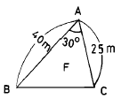
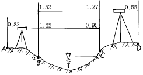
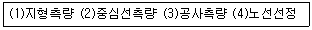
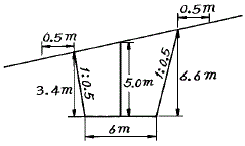
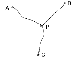

지적산업기사 (2004-05-23 기출문제)
1과목: 지적측량
1. 오차중 그 원인이 불명하여 주의하여도 제거할 수 없는 것은?
- 착오
- 정오차
- 우연오차
- 누적오차
(정답률: 알수없음)

2. 두 점간 거리 200m를 축척 1/500 도상에 등록한 경우 두 점간 도상길이는?
- 20㎝
- 40㎝
- 50㎝
- 80㎝
(정답률: 알수없음)
3. 지적삼각보조측량에서 2개의 삼각형으로부터 산출한 교차가 종선 0.40m, 횡선 0.30m 일 때 연결오차는?
- 0.30m
- 0.40m
- 0.50m
- 0.60m
(정답률: 알수없음)
4. 배각법에 의한 수평각 관측의 특징이 아닌 것은?
- 방향관측법에 비해 읽기 오차의 영향을 적게 받는다.
- 반복관측에 의해 분도반 전체를 사용하므로 눈금오차가 소거된다.
- 누적관측치를 평균하게 되므로 직접 독정할 수 없는 미량의 값을 구할 수 있다.
- 한 측점에서 여러 개의 방향을 관측할 때는 방향관측법보다 능률적이다.
(정답률: 알수없음)
5. 지적도근점의 각도관측에 있어서 방위각법에 의할 때 1등도선의 폐색오차의 제한은? (단, n은 폐색변을 포함한 변의 수)
- ± √n 분 이내
- ± 1.5 √n 분 이내
- ± 2 √n 분 이내
- ± 2.5 √n 분 이내
(정답률: 알수없음)
6. 측판측량방법에 의한 세부측량을 도선법으로 시행한 결과 변의 수가 20이고 오차가 1.0㎜ 발생하였다면 16번째 변에 배부하여야 할 도상길이는?
- 0.5mm
- 0.6mm
- 0.7mm
- 0.8mm
(정답률: 알수없음)
7. 지적도 및 임야도의 재작성에 대한 방법으로 옳지 않은 것은?
- 지적도 및 임야도의 경계가 불분명한 경우에는 측량결과도를 근거로 한다.
- 재작성 당시의 지적도 및 임야도를 기준으로 한다.
- 직접자사법, 간접자사법, 전자자동제도법에 의한다.
- 지적도 및 임야도의 도곽선에 도상 0.3㎜이상의 신축이 있는 경우에는 미리 그 신축을 교정후 시행한다.
(정답률: 알수없음)
8. 경위의측량방법으로 세부측량시 측량준비도에 등재할 사항이 아닌 것은?
- 측량대상 토지의 경계와 경계점의 좌표
- 도곽선과 그 수치
- 인근 토지의 경계선
- 행정구역선과 그 명칭
(정답률: 55%)
9. 다음 그림에서 면적 F는?

- 200m2
- 250m2
- 450m2
- 500m2
(정답률: 알수없음)
10. 다각망도선법에 의한 지적도근점표지의 점간 평균거리는 얼마 이하로 하도록 되어 있는가?
- 500m
- 400m
- 300m
- 200m
(정답률: 90%)
11. 경계점좌표등록부시행지역의 지적도근점 측량성과가 그 결과로 인정될 수 있는 검사성과와의 허용범위는?
- 0.10m 이내
- 0.15m 이내
- 0.20m 이내
- 0.25m 이내
(정답률: 58%)
12. 지적도면에 등록하는 행정구역선 중 시· 도계에 대한 설명으로 맞는 것은?
- 실선 4mm와 허선 2mm를 연결하고 실선 중앙에 1mm로 교차하며, 허선에 직경 0.3mm 점 1개를 제도한다.
- 실선 3mm와 허선 2mm를 연결하고 실선 중앙에 1mm로 교차하며, 허선에 직경 0.3mm 점 1개를 제도한다.
- 실선 4mm와 허선 3mm를 연결하고 실선 중앙에 1mm로 교차하며, 허선에 직경 0.3mm 점 2개를 제도한다.
- 실선 4mm와 허선 2mm로 연결하고 실선 중앙에 2mm로 교차하며, 허선에 직경 0.1mm 점 2개를 제도한다.
(정답률: 62%)
13. 지적삼각점의 연직각을 관측한 결과 최대치와 최소치의 교차가 몇 초 이내인 경우 평균하여 연직각으로 하는가?
- 10초 이내
- 30초 이내
- 50초 이내
- 60초 이내
(정답률: 75%)
14. 축척 1/3000 지역에서 등록전환될 면적이 350m2일 때 면적의 오차허용범위는?
- 18m2
- 37m2
- 56m2
- 75m2
(정답률: 10%)
15. 지적삼각보조측량에 관한 규정 사항에 대한 설명으로 옳은 것은?
- 다각망도선법에 의할 경우는 3점이상의 기지점을 포함한 결합다각방식에 의한다.
- 관측은 10초독 이상의 정밀경위의를 사용해야 한다.
- 도선별 평균방위각과 관측방위각의 폐색오차는 ± 15√n 초 이내로 한다.
- 수평각 관측은 3대회의 방향관측법에 의한다.
(정답률: 알수없음)
16. 지적도근측량을 도선법으로 시행할 경우 사용할 수 없는 도선은?
- 결합도선
- 폐합도선
- 개방도선
- 왕복도선
(정답률: 알수없음)
17. 지적세부측량을 경위의측량방법으로 시행할 경우에 대한 설명으로 맞는 것은?
- 수평각관측은 2대회의 방향관측법에 의한다.
- 수평각관측은 2배각의 배각법으로 할 수 있다.
- 연직각관측은 정측으로 2회 관측하여 그 교차가 5분 이내인 때에는 그 평균치를 연직각(분단위)으로 한다.
- 관측은 10초독이상의 정밀경위의를 사용한다.
(정답률: 알수없음)
18. 측판측량방법에 의한 지적세부측량을 방사법으로 하는 경우에 1방향선의 도상길이로 맞는 것은?
- 10cm 이하
- 15cm 이하
- 20cm 이하
- 25cm 이하
(정답률: 70%)
19. 지적법령의 규정에 의한 지적도의 축척에 해당되지 않는 것은?
- 1/600
- 1/1000
- 1/2000
- 1/3000
(정답률: 60%)
20. 어느 측선의 방위(θ)가 S60°20'30“E 이라면 이 측선의 방위각은?
- 60°20'30“
- 119°39'30“
- 240°20'30“
- 299°39'30“
(정답률: 알수없음)
2과목: 응용측량
21. 등고선의 성질에 대한 설명으로 옳지 않은 것은?
- 동일 등고선상 모든 점의 표고는 동일하다.
- 표고가 다른 두 등고선은 동굴 또는 절벽에서 교차하거나 합치한다.
- 지표의 최대 경사선 방향은 반드시 등고선과 직교 한다.
- 등고선은 도면 안이나 밖에서 반드시 폐합하지 않는 경우도 있다.
(정답률: 67%)
22. 사진측량의 특수 3점이 아닌 것은?
- 주점
- 연직점
- 수평점
- 등각점
(정답률: 알수없음)
23. 사진판독에 사용하는 요소가 아닌 것은?
- 색조
- 형상
- 과고감
- 촬영고도
(정답률: 알수없음)
24. 평지를 촬영고도 2000m에서 초점거리 150mm의 카메라로 연직 촬영한 사진을 가지고 축척을 2배로 확대하였다면 이 확대사진에서 실제 길이가 300m인 다리의 길이는?
- 35mm
- 40mm
- 45mm
- 50mm
(정답률: 60%)
25. 정확한 위치에 기준국을 두고 GPS 위성 신호를 받아 기준국 주위에서 움직이는 사용자에게 위성신호를 넘겨주어 정확한 위치를 계산하는 방법은?
- DOP
- DGPS
- SPS
- S/A
(정답률: 87%)
26. 곡선 중 주로 도로의 종단곡선으로 이용되는 것은?
- 2차 포물선
- 클로소이드
- 머리핀곡선
- 램니스케이트
(정답률: 64%)
27. 그림과 같이 교호 수준측량을 시행한 경우 A점의 표고가 50m라면 D점의 표고는?

- 50.06m
- 50.57m
- 50.58m
- 50.59m
(정답률: 알수없음)
28. 노선측량의 일반적 작업순서로 옳은 것은?

- (4) → (1) → (2) → (3)
- (1) → (3) → (2) → (4)
- (4) → (3) → (2) → (1)
- (2) → (1) → (3) → (4)
(정답률: 70%)
29. 항공사진측량의 장점으로 틀린 것은?
- 동적인 측량이 가능하다.
- 일부 외업 외에 분업화로 작업능률성이 높다.
- 축척변경이 용이하다.
- 대축척일수록 경제적이다.
(정답률: 알수없음)
30. 그림의 단면 용지 폭은? (단, 여유폭은 0.5m로 한다.)

- 10m
- 11m
- 12m
- 13m
(정답률: 알수없음)
31. 지형이 고르지 못한 지역에 긴 터널의 중심선을 설치하는 경우에 대한 설명으로 옳지 않은 것은?
- 기본삼각점 등을 이용하여 기준점 위치를 정한다.
- 예비측량을 시행하여 2점의 T.P점을 설치한다.
- 2점의 T.P점을 연결하여 갱구에 필요한 기준점을 측설한다.
- 기준점은 평판측량에 의하여 기준점망을 결정한다.
(정답률: 55%)
32. 항공사진의 축척에 대한 설명 중 옳은 것은?
- 초점거리에 비례하고 비행고도에 반비례한다.
- 초점거리에 비례하고 비행고도에 비례한다.
- 초점거리에 반비례하고 비행고도에 비례한다.
- 초점거리에 반비례하고 비행고도에 반비례 한다.
(정답률: 42%)
33. A,B,C 세 수준점으로부터 수준측량을 하여 P점의 표고를 결정한 값이 A→ P에서 210.732m, B→ P에서 210.758m, C→ P에서 210.786m이었을 때 P점의 최확치는? (단, AP=4km, BP=3km, CP=2km임)

- 210.745m
- 210.750m
- 210.765m
- 210.770m
(정답률: 50%)
34. 축척 1/25,000인 지형도에서 A점의 표고는 80m이고, B점의 표고는 140m 이며 두 점간의 거리가 도상 15.7㎝일 때 경사구배는?
- 1/63.2
- 1/65.0
- 1/65.2
- 1/65.4
(정답률: 30%)
35. 완만한 경사지를 고저차 측량을 할 때 레벨을 세우는 회수를 짝수로 하여 소거될 수 있는 오차는?
- 표척의 영점 오차
- 수준기축에 의한 오차
- 시준축에 의한 오차
- 기포관 오차
(정답률: 30%)
36. 고속차량이 직선부에서 곡선부로 주행할 경우, 안전하고 원활히 통과할 수 있도록 하기 위하여 설치하는 곡선은?
- 단곡선
- 접선
- 절선
- 완화곡선
(정답률: 알수없음)
37. R=300m, I=50°인 단곡선의 접선길이(T.L)와 곡선길이 (C.L)는?
- T.L=126.79m, C.L=261.75m
- T.L=139.89m, C.L=261.75m
- T.L=126.79m, C.L=361.75m
- T.L=139.89m, C.L=361.75m
(정답률: 60%)
38. 노면배수를 목적으로 설치하는 곡선은?
- 수평곡선
- 배향곡선
- 종단곡선
- 횡단곡선
(정답률: 알수없음)
39. 지형의 표시법 중 급경사는 굵고 짧게, 완경사는 가늘고 길게 표시하는 방법은?
- 음영법
- 영선법
- 채색법
- 등고선법
(정답률: 47%)
40. 캔트 계산에 있어서 속도와 곡선 반경을 각각 4배로하면 캔트는 몇 배로 되는가?
- 1/2배
- 2배
- 4배
- 16배
(정답률: 알수없음)
3과목: 토지정보체계론
41. 도시화가 진행되는 단계중 집적의 불이익이 가장 크게 나타나는 단계는?
- 도시화 단계
- 교외화 단계
- 재도시화단계
- 역도시화 단계
(정답률: 알수없음)
42. 도시내부구조에서 주택지역의 공간구조가 부채꼴 모양의 선형구조로서 파악될 수 있다고 하면서 선형이론을 제기한 사람은?
- 버제스(E. W. Burgess)
- 호이트(H. Hoyt)
- 해리스(C. D. Harris)
- 울만(E. L. Ullman)
(정답률: 30%)
43. 무중심형(無中心型)의 도시구성방식이 아닌 것은?
- 장방형형(長方形型)
- 전원도시형(田園都市型)
- 다각구조(多角構造)
- 대상구조(帶狀構造)
(정답률: 알수없음)
44. 환지방식으로 도시개발사업을 할 때, 원칙적으로 필요한 경비를 확보하는 방법은?
- 체비지의 매각
- 수익자 부담금
- 지방교부세
- 국가 및 자치단체의 보조
(정답률: 0%)
45. 역전광장에 관한 기술 중 옳지 않은 것은?
- 철도교통과 노면교통의 연결점으로써 그 처리상 교통 광장이 필요하다.
- 광장은 사람이나 차의 흐름에 교차가 일어나지 않도록 설계한다.
- 광장의 크기는 주로 그 역의 화객량에 따라 정한다.
- 광장은 버스터미널이 되도록 설계한다.
(정답률: 알수없음)
46. 다음 중 계획대상 도시에서 장래 뚜렷한 산업구조 변경이 예상되어 추세연장법에 의한 인구예측이 어려울 때 적합한 인구추정방법은?
- 비교유추에 의한 방법
- 토지이용계획에 의한 방법
- 취업인구로 예측하는 방법
- 집단생잔법에 의한 방법
(정답률: 24%)
47. 다음 중 도시재개발의 유형이 아닌 것은?
- 전면재개발
- 난개발
- 지구수복
- 지구보전
(정답률: 알수없음)
48. 다음 중 우리 나라 도시기본계획의 승인권자는?
- 건설교통부장관
- 국립지리정보원장
- 행정자치부장관
- 도시계획위원장
(정답률: 알수없음)
49. 신도시 개발의 장점이 아닌 것은?
- 저렴한 토지를 공급할 수 있다.
- 주거형태 선택에 다양성을 제공한다.
- 불량 주거지의 제거가 가능하다.
- 발생 가능한 도시문제를 미연에 방지할 수 있다.
(정답률: 20%)
50. 위성도시에 대한 설명으로 틀린 것은?
- 모도시 기능의 일부를 분담
- 대도시의 인구분산 및 공업의 분산배치가 목적
- 로버트 테일러(G. Robert Taylor)가 착안하여 발표
- 모도시와 독자성
(정답률: 28%)
51. 도시의 인구증가에 관한 다음 설명 중 옳지 않은 것은?
- 도시인구 증가는 자연적 증가와 사회적 증가로 대별된다.
- 특히 대도시 인구로서 문제가 되는 것은 사회적 증가이다.
- 대도시의 전입인구는 주로 원거리로 부터의 전입이 대부분이다.
- 대도시에서는 주간인구가 야간 인구보다 많다.
(정답률: 10%)
52. 도시관리계획을 수립하고자 할 때 주민의 의견청취를 위해서 수립하고자 하는 도시관리계획안을 몇 일 이상을 일반이 열람할 수 있도록 하여야 하는가?
- 3일
- 7일
- 14일
- 30일
(정답률: 알수없음)
53. 도시 지역이 평면 확산되어 가는 현상은?
- 슬럼(Slum)
- 스모그(Smog)
- 스프롤(Sprawl)
- 스태그플레이션(Stagflation)
(정답률: 알수없음)
54. 다음 중 다핵도시란 어느 것을 말하는가?
- 여러 도시가 한지역에 가깝게 밀집되어 있는 것
- Magalopolis
- Matropolis
- 도시의 기능 중심이 여러 곳에 있는 도시
(정답률: 알수없음)
55. 1902년 E.Howard의 내일의 전원도시라는 저서에 의한 전원도시(田園都市)의 조건이 아닌 것은?
- 인구는 3만~5만으로 한다.
- 충분한 공지(空地)를 보유한다.
- 토지는 사유(私有)로 한다.
- 시민경제 유지에 족할 만한 공업을 유치한다.
(정답률: 알수없음)
56. 근대도시계획의 특징이 아닌 것은?
- 직선광로
- 조원적 설계
- 개방형도시
- 보루형도시
(정답률: 알수없음)
57. 환지방식에 의한 도시개발사업에서 청산금을 받을 권리 또는 징수할 권리의 시효는?
- 1년
- 2년
- 4년
- 5년
(정답률: 20%)
58. 페리의 근린주구의 구성 단위로서 가장 규모가 작은 단위로 우리의 일상생활과 관련 깊은 이웃의 개념이 포함된 단위는?
- 근린분구
- 근린주구
- 인보구
- 근린지역
(정답률: 24%)
59. 도시기본계획의 특징이 아닌 것은?
- 포괄적 계획
- 정책적 접근
- 단기적인 계획기간
- 종합계획
(정답률: 알수없음)
60. 다음의 도시관리계획상 용도지역구분 중 건폐율이 가장 낮은 것은?
- 주거지역
- 녹지지역
- 상업지역
- 공업지역
(정답률: 10%)
4과목: 지적학
61. 지번설정의 원칙으로 옳은 것은?
- 북서에서 남동으로 순차적으로 부여
- 남서에서 북동으로 순차적으로 부여
- 북동에서 남서로 순차적으로 부여
- 남동에서 북서로 순차적으로 부여
(정답률: 40%)
62. 토지조사 및 임야조사 당시(1910년~1924년)의 지적도 또는 임야도의 축척에 해당되지 않는 것은?
- 1/1,000
- 1/1,200
- 1/2,400
- 1/3,000
(정답률: 알수없음)
63. 양입지에 대한 설명으로 옳지 않은 것은?
- 주된 지목의 토지에 접속되거나 둘러싸인 다른 지목의 협소한 토지
- 주된 지목의 토지편의를 위해 설치된 대· 도로· 구거 등의 부지
- 주된 지목을 갖는 토지에 편입되는 토지
- 주된 지목의 토지에 편입되어 1필지로 획정되는 종된 토지
(정답률: 알수없음)
64. 적극적 등록주의를 채택하는 지적제도하에서 소유자의 토지 이동 신청서는 어떤 의미를 갖는가?
- 등록촉진을 위한 단순자료
- 등록결정을 위한 증빙자료
- 등록처리를 위한 필수자료
- 등록변경을 위한 근거자료
(정답률: 10%)
65. 현재 우리나라의 토지대장의 편성방식으로 맞는 것은?
- 물적편성주의
- 인적편성주의
- 연대적편성주의
- 물적· 인적편성주의
(정답률: 47%)
66. 지번변경을 전체적으로 시행하기 전에 그 지역내에서 시행되어야 할 일과 가장 관계가 없는 것은?
- 신규등록을 요하는 토지는 신규등록을 할 것
- 토지의 분할을 요하는 것은 분할 처리 할 것
- 토지합병을 요하는 것은 합병 처리를 할 것
- 변경지역내의 지가를 조사할 것
(정답률: 알수없음)
67. 결번의 원인이 되지 않는 것은?
- 토지의 합병
- 토지의 등록전환
- 지번부여 지역의 분합
- 토지 분할
(정답률: 알수없음)
68. 토지등록제도 중에서 토렌스 시스템에서 채택하고 있는 이론이 아닌 것은?
- 거울이론
- 보상이론
- 커튼이론
- 보험이론
(정답률: 알수없음)
69. 다음 나라들 중에서 지적측량업무를 국가에서 위탁받아 대행하는 대행제도가 시행되고 있지 않은 나라는?
- 한국
- 일본
- 네덜란드
- 대만
(정답률: 알수없음)
70. 지적공부를 복구할 수 있는 자료가 되지 못하는 것은?
- 법원의 확정판결서 정본
- 지적공부등록현황 집계표
- 지적공부의 등본
- 부동산등기부 등본
(정답률: 알수없음)
71. 토지조사사업에 따른 재결의 효력발생 시기는?
- 조사일
- 사정일
- 재결일
- 작성일
(정답률: 50%)
72. 적극적 지적제도의 특징이 아닌 것은?
- 토지의 등록은 의무화 되어 있지 않다.
- 토지등록의 효력은 정부에 의해 보장된다.
- 토지등록상 문제로 인한 피해는 법적으로 보장된다.
- 등록되지 않은 토지에는 어떤 권리도 인정될수 없다.
(정답률: 50%)
73. 경계점좌표등록부 등록사항이 아닌 것은?
- 지번
- 토지소재
- 고유번호
- 토지경계
(정답률: 50%)
74. 지목설정의 원칙으로 맞는 것은?
- 선지목 설정의 원칙
- 등록 경중의 원칙
- 일시 변경의 원칙
- 사용목적 추종의 원칙
(정답률: 알수없음)
75. 토지의 사정(査定) 사항은 어떠한 행위였는가?
- 소유자와 강계를 확정하는 행정처분이었다.
- 소유자가 강계를 결정하는 사법처분이었다.
- 소유자의 소유권을 확정하는 행정처분이었다.
- 경계와 면적을 결정하는 지적조사 행위이었다.
(정답률: 31%)
76. 지적형식주의와 관계가 있는 사항은?
- 등록의 원칙
- 특정화의 원칙
- 공시의 원칙
- 물적편성주의 원칙
(정답률: 알수없음)
77. 지적불부합 토지가 우리에게 주는 영향이 아닌 것은?
- 토지에 대한 권리행사에 지장을 초래한다.
- 지적행정의 불신을 초래한다.
- 정확한 토지이용계획을 수립할 수 있게 한다.
- 공공사업의 수행에 지장을 초래한다.
(정답률: 50%)
78. 공유지연명부의 등재사항이 아닌 것은?
- 지목
- 토지의 고유번호
- 소유권 지분
- 소유자의 주민등록번호
(정답률: 34%)
79. 경계표지의 설정에 요구되는 기능으로 적당하지 못한 것은?
- 안전성
- 영구성
- 식별용이성
- 변동성
(정답률: 40%)
80. 지적측량의 특성상 법령의 기준에 따라 측정하는 측량을 무엇이라 하는가?
- 직권측량
- 일반측량
- 기속측량
- 강제측량
(정답률: 알수없음)
5과목: 지적관계
81. 축척변경시행지역 안에서의 토지이동은 언제 있는 것으로 보는가?
- 촉탁등기시
- 축척변경 확정공고일
- 청산금 교부시
- 축척변경 승인신청시
(정답률: 55%)
82. 등기된 토지가 하천부지로 된 경우 당해관청은 등기소에 등기의 말소를 촉탁하여야 한다. 이는 어느법에 의하는 것인가?
- 지적법
- 부동산 등기법
- 하천법
- 공유수면 매립법
(정답률: 알수없음)
83. 다음은 소관청이 관할 등기소에 등기를 촉탁할 수 있는 경우이다. 틀린 것은?
- 축척변경을 시행한 때
- 소관청이 직권으로 지목을 변경한 때
- 토지 소유자의 신청에 따라 토지를 지적공부에 신규 등록한 때
- 행정구역의 개편으로 새로이 지번을 설정한 때
(정답률: 50%)
84. 다음 권리 중 민법의 규정상 동산을 그 개체로 할 수 없는 것은?
- 소유권
- 점유권
- 유치권
- 저당권
(정답률: 28%)
85. 다음 중 지적공부로 볼 수 없는 것은?
- 지적도
- 지적약도
- 임야대장
- 경계점좌표등록부
(정답률: 알수없음)
86. 신규등록신청시 첨부해야 될 소유권에 관한 서류가 아닌것은?
- 공유수면 매립법에 의한 준공인가필증 사본
- 소유권을 증명할 수 있는 서류의 사본
- 토지의 분할허가서 또는 사본
- 법원의 확정판결서정본 또는 사본
(정답률: 59%)
87. 다음은 지적서고에 관한 설명이다. 잘못된 것은?
- 지적서고는 지적사무실에 연접하여 설치해야 한다.
- 지적서고는 온· 습도 자동조절장치를 설치하고, 습도는 65± 5퍼센트를 유지하여야 한다.
- 지적서고의 출입자는 지적사무담당공무원으로 한정한다.
- 지적서고에는 인화물질의 반입을 금지하며 지적공부와 지적측량장비만 보관한다.
(정답률: 43%)
88. 도시개발사업시행을 국가· 지방자치단체 또는 정부투자기관에 위탁할 수 있는 사업으로 틀린 것은?
- 항만· 철도 및 공공시설의 건설과 공유수면의 매립에 관한 업무
- 도시개발사업을 위한 손실보상업무, 주민이주대책사업
- 도시개발사업을 위한 기초조사, 토지매수업무
- 토지소유자 총수의 1/2이상의 동의를 얻어 수행하는 도시개발사업
(정답률: 알수없음)
89. 다음 중 대지권등록부의 등록사항이 아닌 것은?
- 건물 명칭
- 축척
- 소유권 지분
- 대지권의 비율
(정답률: 알수없음)
90. 도시관리계획에 관한 지형도면의 고시를 할 때 지적이 표시된 지형도로 적합하지 않는 도면의 축척은?
- 축척 300분의 1
- 축척 500분의 1
- 축척 1000분의 1
- 축척 1500분의 1
(정답률: 34%)
91. 국토의계획및이용에관한법률상 용도지역안에서의 용적률의 범위를 기술한 것으로 옳지 않은 것은?
- 주거지역 500% 이하
- 상업지역 1500% 이하
- 공업지역 400% 이하
- 녹지지역 300% 이하
(정답률: 20%)
92. 축척변경시행에 따른 청산금 내용으로 옳은 것은?
- 이의신청은 소관청에 하여야 한다
- 수령 통지일로부터 3월 이내에 교부
- 납부 고지일로부터 6월 이내에 납부
- 초과액은 국가의 수입으로 하고 부족액은 지방자치단체가 부담
(정답률: 46%)
93. 토지거래계약허가구역으로 지정된 후 토지의 거래계약을 체결하고자 하는 당사자가 허가신청서에 첨부할 사항으로 잘못된 것은?
- 개발계획이 표시된 지적도등본
- 토지의 지번· 지목· 면적· 이용현황 및 권리설정현황
- 토지의 이용에 관한 계획
- 계약예정금액
(정답률: 알수없음)
94. 일반적으로 민법상의 토지 소유권이 미치는 범위는?
- 정당한 이익이 있는 범위내에서 토지의 상하이다.
- 토지의 표면과 점유권이 있는 지상이다.
- 토지의 표면이다.
- 지역권이 있는 지상이다.
(정답률: 알수없음)
95. 등기촉탁을 한 경우 소관청이 토지소유자에게 하는 지적 정리통지는 등기필증이 접수된 날로부터 며칠내로 하는 가 ? (단, 토지의 표시에 관한 변경등기가 필요한 경우)
- 5일 이내
- 15일 이내
- 30일 이내
- 60일 이내
(정답률: 알수없음)
96. 축척 600분의 1 지역에서 1필지의 산출면적이 76.55m2 였다면 결정면적은?
- 76 m2
- 76.5 m2
- 76.6 m2
- 77 m2
(정답률: 46%)
97. 지적공부에 기재된 등록사항의 정정으로 인접 토지의 경계가 변경되는 경우 그 정정은 무엇에 의해야 하는가?
- 등기필증등본
- 토지대장 및 지적도
- 소관청 직권
- 인접 토지소유자의 승낙서 또는 확정판결서 정본
(정답률: 54%)
98. 축척변경시 토지소유자에게 청산금의 납부고지 또는 수령통지를 하는 때는 언제인가?
- 소관청이 청산금의 결정을 공고한 날로부터 15일이내
- 소관청이 청산금의 결정을 공고한 날로부터 20일이내
- 소관청이 청산금조서를 작성하고 공고한 날로 부터 15일이내
- 소관청이 청산금조서를 작성하고 공고한 날로 부터 20일이내
(정답률: 40%)
99. 개발제한구역의 지정목적으로 가장 거리가 먼 것은?
- 도시의 무질서한 확산 방지
- 도시주변의 자연환경 보전
- 도시민의 건전한 생활환경 확보
- 도시의 무질서한 시가화의 방지
(정답률: 10%)
100. 광역도시계획에 대한 내용으로 틀린 것은?
- 광역계획권이 같은 도의 관할구역에 속하여 있는 경우에는 관할 도지사가 광역도시계획을 수립한다.
- 광역계획권이 2이상의 특별시· 광역시· 도의 관할구역에 걸쳐 있는 경우에는 관할 시· 도지사가 공동으로 광역도시계획을 수립한다.
- 광역도시계획을 수립 또는 이를 변경하고자 하는 때에는 미리 공청회를 열어 주민 등으로부터 의견을 들어야 한다.
- 건설교통부장관은 시· 도지사의 요청이 없는 경우는 광역도시계획을 수립할 수 없다.
(정답률: 알수없음)